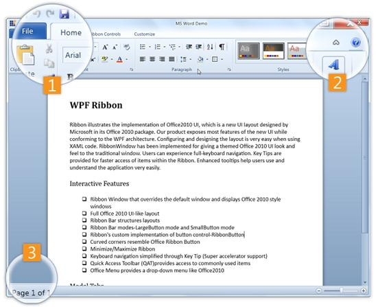
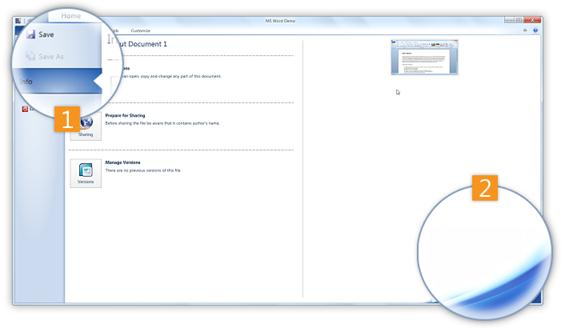

Figure 828: Ribbon View
The different components of the control are described below:
1. Controls
· BackStage Button – Used to Show/Hide the Backstage
· QAT - This area holds the frequently accessed items. The user can add/remove items dynamically.
2. Minimize Ribbon Button - Used to change the state (Minimize/Maximize) of Ribbon
3. Ribbon Status Bar – Displays the status bar items

Figure 829: BackStage View
Components of the BackStage view of the control are described below:
1. BackStage Items - The BackStage Items consist of the following:
· BackStageCommandButton - This button is similar to a control and is used to perform certain task on click.
· BackStageTabItem - This is a tab like control that comprises of Header and Content area. Header is displayed in the left bar and content occupies the remaining area in the RibbonWindow.
2. BackStage Corner Image - Image placed at the bottom-right corner of the BackStage area